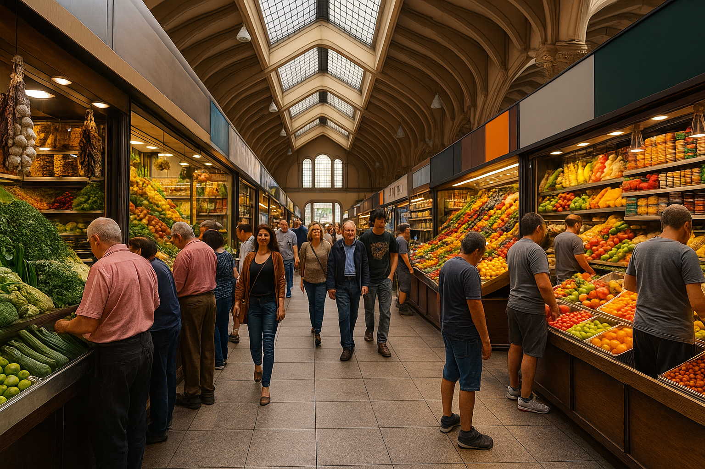
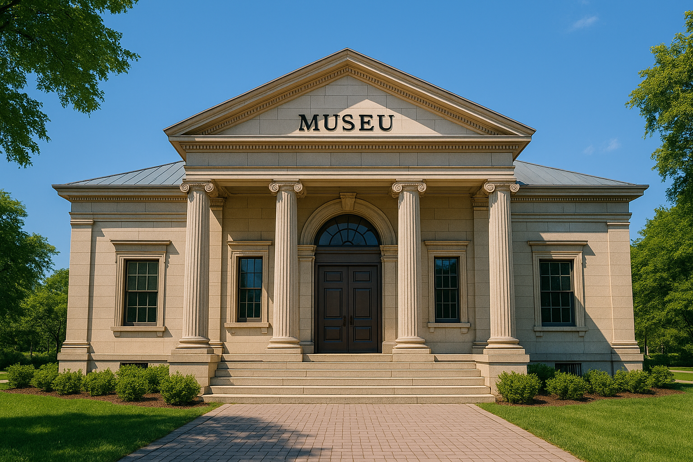

Galeria


Dicas de Visita
Leve água, use calçado confortável e confira os horários dos espaços culturais
Para saber mais sobre os locais, visite os links abaixo.
Links úteis
Créditos
Fotos: gptola ficou até vermelho de tanto pensar
Voltar ao topo